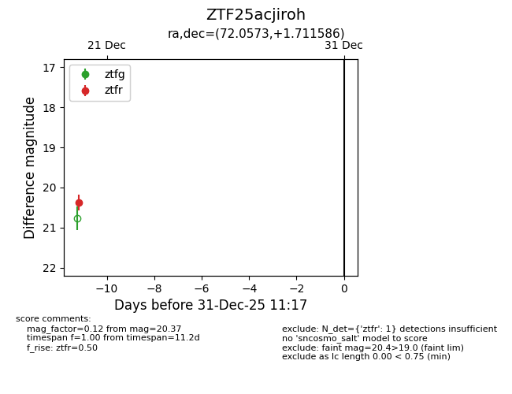
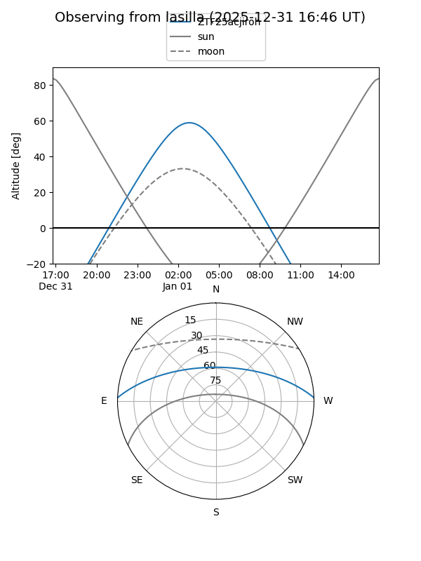
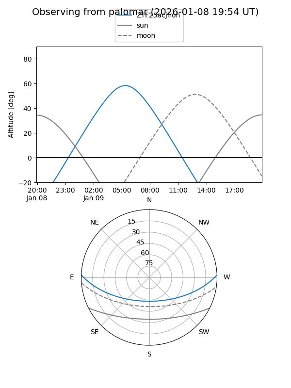

ZTF25acjiroh
Target ZTF25acjiroh at 2025-12-22 14:03
Aliases and brokers:
FINK: fink-portal.org/ZTF25acjiroh
Lasair: lasair-ztf.lsst.ac.uk/objects/ZTF25acjiroh
ALeRCE: alerce.online/object/ZTF25acjiroh
alt names
ZTF25acjiroh (ztf,fink_ztf)
Coordinates:
equatorial (ra, dec) = 72.0573,+1.71159
equatorial (HMS+DMS) = 04:48:13.74,+01:42:41.71
galactic (l, b) = (196.0853,-26.22637)
Flags:
Photometry:
last ztfr=20.37
1 ztfr detections
Lightcurve

Visibility


Additional plots